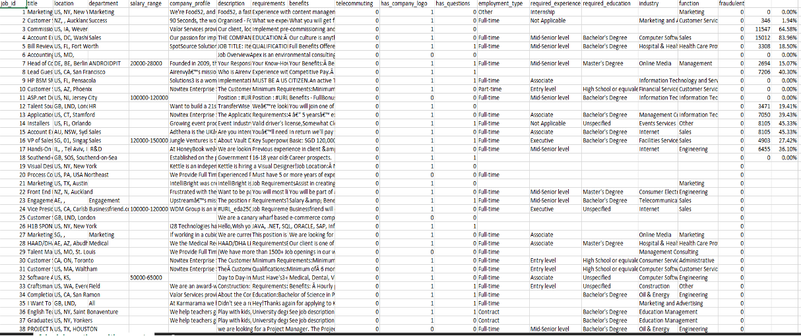
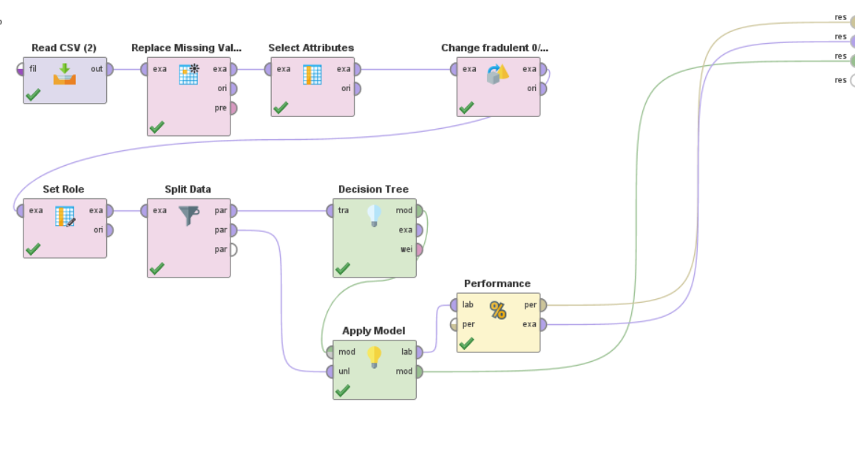
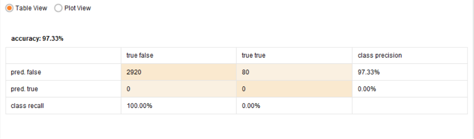
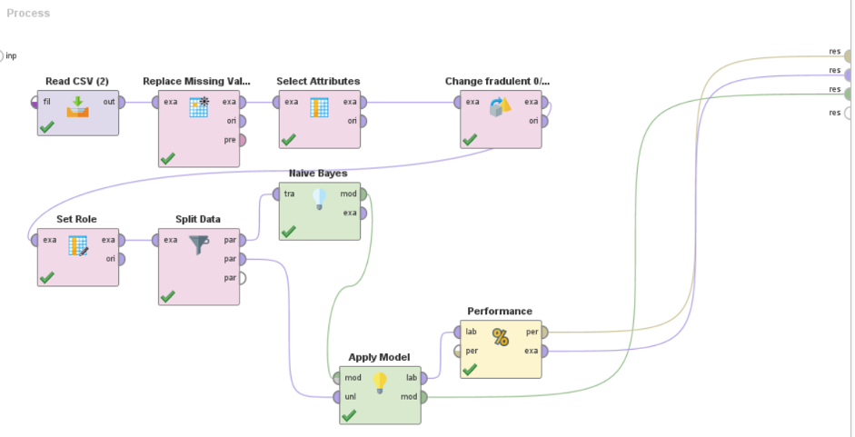
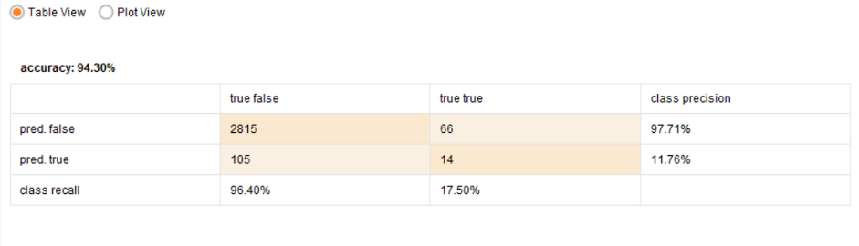
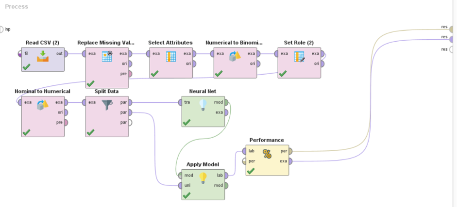
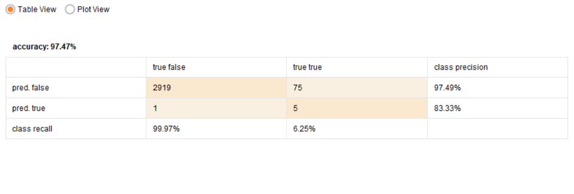

In these part we will see how impactful is one attributes toward fraudulent. The first part is data cleansing as shown below.
Our dataset
Fake Job Posting table with attributes
First we will separate data based on their percentage on missing value. If the missing value is higher than 50% we consider it as irrelevance data such as location and department so we remove it from the table.
After that we will remove table that have description that cannot be used as nominal or binomial data. The data cannot be use because the difference between each data is very different and cannot be used as data. Such as job_id, title, salary_range, company_profile, description, requirement, benefits.
Now all data has been clean we will now use PowerBI as our dashboard to visualize the fake job posting data.
Data in Power BI
The data use is telecommuting, has_company_logo, has_questions, employment_type, required_experience, required_education, industry, function, fraudulent.
Some of the attribute has missing value but not more than 50% of the whole data and the nominal is not very difference from each other.
Donut chart show how much is fraudulent which is 1 consider as fraudulent
The chart show that there is about 870 fraudulent has been spotted.
Fraudulent based on employment_type bar chart
Based on this chart its show that Full time, No description and part time is the top three cause of fraudulent.
Based on has_company_logo
The company with missing value has the highest fraudulent with Oil & Energy at 2nd place while Accounting at 3rd place.
Based on required_education using Funnel Chart
For required we use Funnel Chart that show that missing value still the most impactful and cause fraudulent as a job posting.
Based on required_experience using TreeMap
This show by using Treemap missing value still give the biggest impact in fraudulent with entry level and mid-senior level at 2nd and 3rd place.
Based on function using Treemap
The function also show missing value give the most fraudulent in a job posting with Administrative and engineering.
Conclusion
Based on our descriptive analysis it shows that missing value is a huge contribution to a fraudulent in a job posting. This make us consider it as a value when going into predictive analysis.
We can conclude that if a job hunter want to search for company to work for make sure it have all description provided before accepting the job.
The first machine learning model is Decision Tree
 
The average accuracy we get is range at 97.33% that is quiet high.
Now we test with Naïve Bayesian Model
 
As shown in picture the Naïve Bayesian model give an accuracy at 94.30% that is consider accurate but not as accurate as Decision Tree Model.
The last one is using the Neural Network Model
 
Neural Network have little bit higher accuracy than Decision Tree Model that is 97.47% which is only 0.14% higher than Decision Tree Model.
This make us decide to use Neural Network to predict any fraudulent in job posting to make sure it is not fake.
Summary
We learn that even though all of them are machine learning model but each model give out difference output based on attribute provided. This could mean that each model react differently in different data provided. So we need to pick the best accuracy from the model been test on before we test on real time data to make sure it give out the most accurate result. This is very important if something need a real time accuracy such as air traffic to make sure no airplanes collide or the airplanes did not land accurately that could lead to fatal for people in the airplane and also people on the ground.